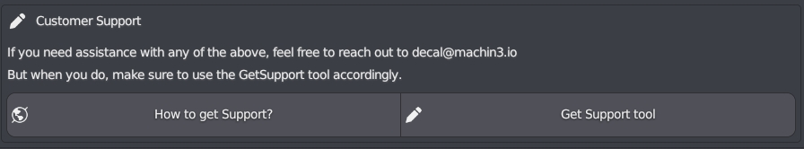

Contents
- Purchase and Update
- Installation
- Get Support
- Using DECALmachine
- Creating Decals
- Exporting Decals
- Other Addons
Purchase and Update
Where can I purchase DECALmachine?
All my addons are sold on two markets:
- Buy DECALmachine on Superhiveformerly known as Blender Market
- Buy DECALmachine on Gumroad
How to get the update?
If you have previously bought DECALmachine, you can download it by going to the store's site, and then just download the latest version you have access to accordingly:
- Download DECALmachine from Superhiveformerly known as Blender Market
- Download DECALmachine from Gumroad
See update installation instructions for details on how to do the actual installation once you have downloaded the DECALmachine .zip file.
Installation
How is DECALmachine installed?
See the Installation guide and follow it precisely. Note the version requirement.
Does DECALmachine work in Blender 4.5-alpha/beta?
Using experimental builds of Blender, you are at risk of encountering sudden failures of addons that used to work just fine the day before.
I can't make any guarantees if things will keep working. Fixing things that break in experimental Blender builds will not be a priority, until the experimental build approaches release.
Does DECALmachine work on macOS?
Yes, 100%.
MacOS users should install Blender properly, by following the official instructions.
Avoid running it just from the Downloads folder!
Note that, for dragging of files and folders, you need to hold down the COMMAND key.
This will ensure AppTranslocation1 is avoided.
{kind=link}
Furthermore, your download may not actually result in a .zip file, and instead extract automatically. This can and needs to be be changed in Safari settings.
Does DECALmachine work on Arch Linux?
Yes, 100%. In fact, I've never used Blender on anything but Linux myself.I don't use Arch btw
Arch Linux users and users of other Arch based or similar rolling release distros are advised to use the official Blender builds.
The Blender package in the Community repository does not supply its own Python, and does not follow official recommendations.
As a consequence, your system's python version may not work properly with Blender and/or DECALmachine or any other addons.
Note
Use the official tarball from blender.org to be on the safe side, it comes with a bundled Python and is the correct version that Blender addons are built against.
What exactly is PIL/pillow and why is it needed?
PIL is not required for basic DECALmachine usage, so for using and working with decals that are supplied with DECALmachine or for 3rd party decal packs, that support DECALmachine.
PIL/pillow is an image manipulation python module, used for decal creation and export, as well as for updating legacy decal assets (from previous versions of DECALmachine).
You can think of it as Photoshop for python or Photoshop by code.
Installation is covered in the Installation + Support video.
For more details on it, check out its own documentation.
Can I install PIL/pillow without an internet connection?
PIL installation is done only once.
An internet connection is needed, because Windows, MacOS and Linux all require a different set of installation files. To support all of these operating systems and guarantee PIL works properly, this online-installation process is the best choice and has proven to have a 100% success rate.
In the past I've supplied pre-compiled versions of PIL for all three operating systems, but they often failed to work properly due to various differences in OS installations. So now the necessary files are downloaded based on a users operating system, and PIL is then compiled on the users computer, thereby ensuring it will work properly.
If you have a second computer with web access and with the same OS as your workstation, you can install DECALmachine and PIL on the second computer, then copy the PIL installation over to the one without web access, and with some luck, it will work fine.
You can see the path of the PIL installation in Blender's System Console
Without a second computer with internet access and using the same OS, you are out of luck and won't be able to create decals and trim sheets, or take advantage of atlasing and baking.
Unless you want to build from source, at which point my support ends and you are on your own.
Get support
Attention
Note the Requirements in the installation guide.
Make sure you are using the latest version.
Confirm you've followed the installation instructions, including potential post-installation steps.
General information
To provide help, I need the following:
- Proof of Purchase
- system-info.txt generated by DECALmachine's GetSupport tooland not from Blender's Help menu
- pil.log file, and batch_updated.log or quarantined.log files if present
Please use the Get Support tool in the help panel or in the addon preferences to create the system-info.txt and .log files, and for further instructions in the README.html file.
If there are any issues with the assets detected, the GetSupport tool will also be directly accessible from the General tab of the addon preferences.  please make use of the GetSupport tool
Failed Installation
If your DECALmachine installation fails, it's almost guaranteed, that this is due to addon/blender version mismatches, other faulty or version mismatched addons, system python version mismatches or general Blender configuration issues, such as files in Blender's addon directory that shouldn't be there.
All of these can affect installation attempts of new addons and cause them to fail, as they often cause a cascade of errors.
None of this would be the fault of the new addon, but all of these would be obvious from the system console output.
If you encounter this and can't resolve these issues on your own, then it is essential to send me the entirety of the system console, not just a screenshot of the end. In fact the beginning is often more important in these cases.
Addon Error/Exception
If you are seeing an error/exception caused by DECALmachine, please also send me the system console output, ideally copied in text form, not just a single screenshot of the error popup, as that may not cover sufficient context.
Keep in mind
On Windows you can turn on the console from Windows > 'Toggle System Console'.
On Linux and MacOS, you need start Blender from a terminal.
I do not need an image of Blender's Info View and I don't need to see Blender's Python Console either.
.blend file to re-produce the issue
If an error only occurs in a specific .blend file or in a certain blender context and you can reproduce it, please attach the blend file to your email as well.
Please remove any part of the model that doesn't contribute to the problem to keep the file size small.
Contact
Use eMail, not X, not Youtube, not Artstation, not Superhive messages, and not the Blender Artists thread for reporting of any issues or problems you have with the Addon.
Just use email. I tend to be very responsive, but please be patient.
DECALmachine
How do I snap decals to a surface?
When Decals are imported using the asset loaders, by default all snap settings are prepared automatically - face snapping, align to surface, etc. Snapping itself is not turned on however.
The suggested method to move decals and align them is by holding down CTRL while moving decals via g. This will turn on snapping temporarily for as long as CTRL is pressed.
As of version 1.8.7 the behavior to set up snapping - and thereby changing any existing snap setttings, is optional and can be disabled in the DECALmachine panel.
How do I mirror decals?
Decals in DECALmachine - being objects - can be mirrored using Blender's mirror modifier, as described here.
Why are my panel decal materials/textures taken from the Aircraft(or any other) library?
You have enabled the Panel option for this other, non-panel decal library in the addon preferences.
Changing the Panel property of a decal library, requires a library reload, or alternatively a Blender restart. Don't forget to save your preferences after the reload, or before the restart.
To change panel decal materials, check out the Adjust tool. Adjust will access all decal libraries marked as Panel. The Slice/Gpanel/Epanel tools will access that same pool of materials.
Why aren't there any Decal Libraries in the Pie Menu?
 no libraries, not even the supplied ones appear in the pie menu
no libraries, not even the supplied ones appear in the pie menu
This is default behavior when running DECALmachine 2.5 the first time in Blender 3.0.
The supplied example assets need to be (batch) updated for them to work in 3.0.
See this what's new section for details on why and how.
If that's not it, verify you aren't using a library visibility preset, that has all libraries hidden.
My Decal Libraries are LOCKED! What can I do?
 supplied decal libraries are locked and can't be removed or written to
supplied decal libraries are locked and can't be removed or written to
You are in decal-remove-mode, and it's visibly enabled via the "Removal" button at the very bottom of the pie menu.
You can not add decals to locked decal libraries, and you can't remove decals from them either.
If you find DECALmachine like this, right after starting Blender, you need to disable decal-remove-mode and save your preferences.
For details on removing decals, check out decal creation, specifically the very end.
Is there a way to make decals affect displacement instead of normals?
Technically it's trivial to change the decal node tree to do displacement as the height maps are already supplied. But think about it, a floating decal with actual displacement?
First off, the decal would need to be subdivided a lot, which can be done, but secondly what would happen to the displaced geometry? It would intersect with the base mesh the decals are floating above - you wouldn't see much of the displaced geometry, as it is sunk into the base mesh.
Why doesn't the ALT + LMB key combination for alternative modes in Project, Slice, etc. work?
Make sure you haven't enabled Emulate 3 Button Mouse in Blender's Input preferences.
This option uses the ALT key in combination with LMB to simulate a middle mouse button, which takes precedence.
If you want to keep this enabled, you can alternatively use ALT + S to call the alternative mode in the Slice tool, or ALT + D for Project, etc.
Material Matching doesn't work properly! Why are the node inputs on the Principled BSDF shader node ignored?
It's working exactly as intended. Only plain pbr materials are supported.
Note
Also check out this related information as to why.
There is also this and this for matching some textures.
Understand that matching materials, with arbitrary node trees (any user could have a completely different node setup for his materials) is a significant challenge in regards to development effort, performance, and maintenance.
Also, from a purely practical perspective DECALmachine's main intended use cases are hard surface focused concept design and game art.
For neither of these do you need to match complex, textured materials - not in Blender anyway.due to the magic of deffered decal shaders
That said, matching decal to materials with more complex node trees in Blender, would be much easier to support from the developers creating material based addons, especially when those materials are procedural. For instance, Oliver J Post's instamat and smudgr addons do support matching decals. That's because he knows exactly how his materials are structured, so he was able to build a tool to connect his node outputs to the decal node groups' inputs.
Decal Creation
How do I create my own Decals?
You can ceate decals of all 4 types directly in Blender, see Decal Creation for details.
How do I create Decals from a whole folder of images?
You need to first load multiple source images. Once done, the Batch Creation: All source images at once option can be enabled.

The resulting instant decals will be layed out next to each other and can then be immediately added to a library using the Add to Library tool - also all at once.
Can I create Decals from Alphas?
Alphas don’t contain enough information to create decals from. They are just height information.
Decals are normal, height, AO, curvature, mask and often subset mask. You could do without AO, curvature and height, but getting normals from height is flawed and creating the subset mask automatically is impossible.
I’d recommend adapting and modeling your favorite designs and create decals from that.
Alternatively you could subdivide a plane A LOT and displace it using the Alpha, then create a decal from that subdivided, displaced plane. The results seem acceptable to some people.
This process is prone to artefacting and does not produce subset masks however, so you are limited to Simple decals.
Can I create Decals for damage and weathering effects, such as those from Quixel?
The focus of DECALmachine has always been hard surface detailing, either for concept, or game art with the aim of bringing decals into deferred rendering pipeline such as Unity HDRP or UE4.
As such (normal mapped) decals in DECALmachine don't have color, roughness or metalness textures.
In Blender decal materials fetch these color, roughness and metallic properties from their parent objects through a process called material matching.
The focus here is simple parameter based materials, not textured ones, and certainly not heavily weathered materials. Decals in Blender are opaque objects after all, and a generalized, automatic approach, that can match opaque decals to arbitrary user created node setups creating complex weathered materials is just not feasible and beyond the scope of what DECALmachine intends to do.
If decals had color, roughness, or metalness maps, then they couldn't be material matched, and they would stand out instead of visually integrate.
Furthermore, in deferred rendering such as Unity HDRP or UE4, decal material properties for color, roughness and metalness are simply taken from the parent object's material - textured or not - simply through the nature of how decal shaders in deferred rendering work. And so again, textures for color, roughness and metalness are not needed.
This lack of support for color, roughness and metalness textures in normal mapped decals, makes using DECALmachine decals for damage and weathering effects impractical, until a new decal type is introduced specifically for this purpose.
Decal Export
Can I bake the Decal textures, to be used in a single texture set?
Yes, as of version 1.9 decal textures can be baked to their parent objects UV space. Checkout the Bake tool for details.
How do you export Decals for use in Unity, Unreal Engine, etc.?
In addition to baking, there are 2 more approaches to exporting in DECALmachine.
Learn more them in the Export Introduction.
Other Addons
Is MACHIN3tools required?
MASCHIN3tools is not needed, but I'd recommended to use at least some of its tools, as they are very convenient in the DECALmachine workflow. Check out the addons section.
Are HardOps and BoxCutter required?
HardOps and BoxCutter are not needed to use DECALmachine. HOps/BC and DM fill different niches in a hard surface workflow.
DM is a finishing and detailing tool. While HOps/BC are tools for working with form and generally improve the Blender experience greatly.
As such the addons complement each either very well and I'd recommend them to any DECALmachine user.
Furthermore it should be noted, that the HardOps and BoxCuter developers have been and continue to be extremely supportive and helpful and DECALmachine would not be what it is, without their initial contributions and guidance.
Why can't I access DECALmachine's pie menu when I activate BoxCutter's tool?
If you make BoxCutter active, by pressing its button in the tool bar, or via the Alt + W shortcut, BoxCutter takes over and brings up its own pie menu when pressing the D key.
To avoid keymap conflicts and use DECCALmachine while the BoxCutter tool is active, you need to either remap the BoxCutter pie menu or the DECALmachine pie to a different key or key combination.
For instance, you could remap the BC pie to SHIFT + D. Once done, you can keep the BoxCutter tool active, access its own pie menu using SHIFT + D, as well as DECALmachine's with D.
Otherwise, you will have to disable the BoxCutter tool(enable any other tool) every time to access DECALmachine's pie menu.
 the BoxCutter pie menu, remapped to
the BoxCutter pie menu, remapped to SHIFT + D in the Keymap preferences
-
Learn more about AppTranslocation. ↩